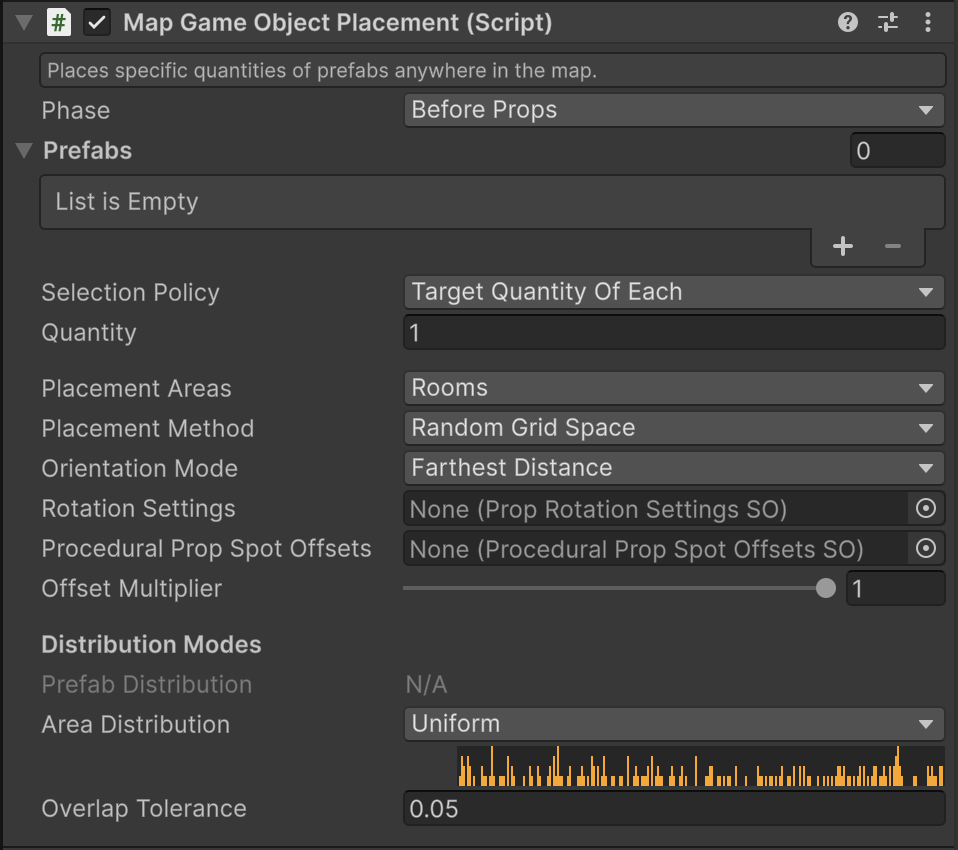
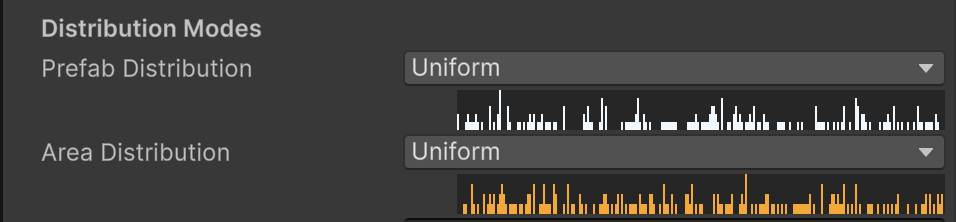
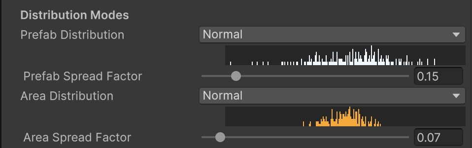
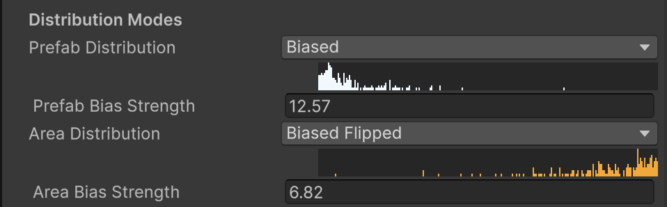
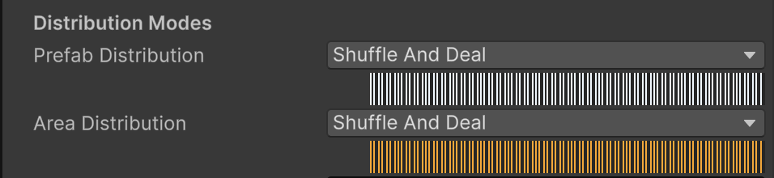
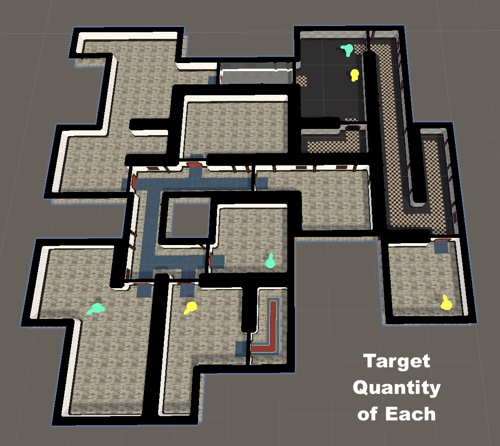
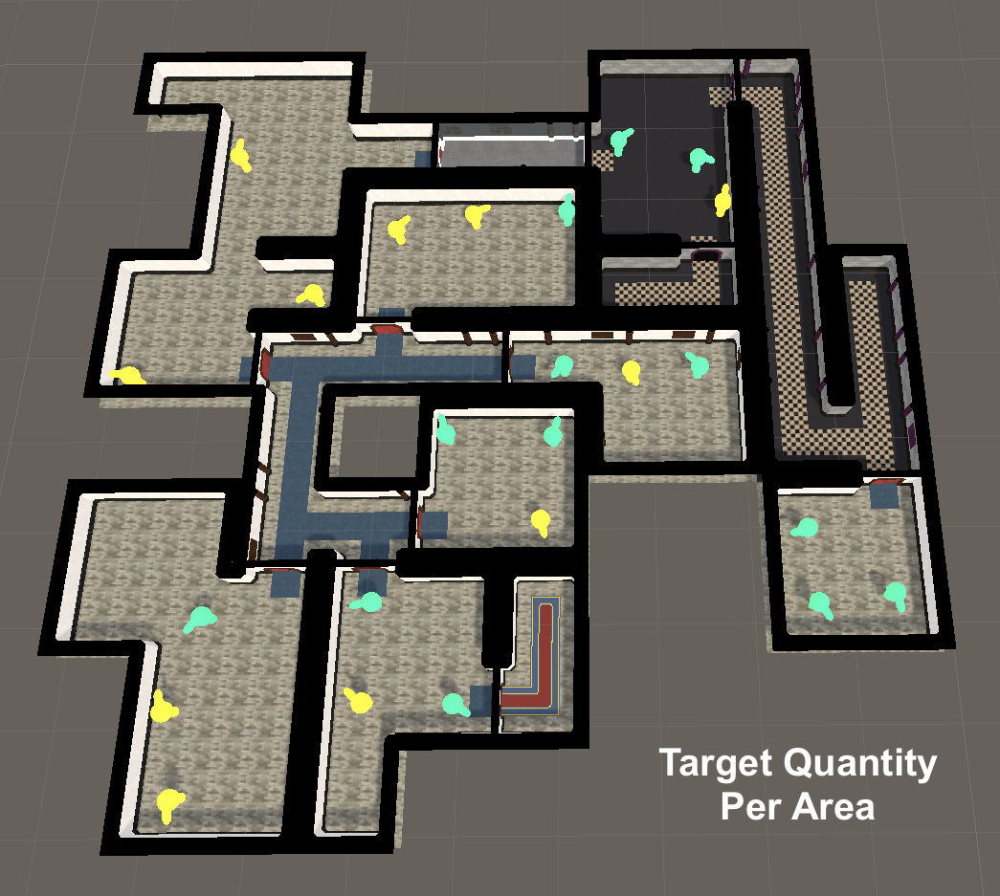
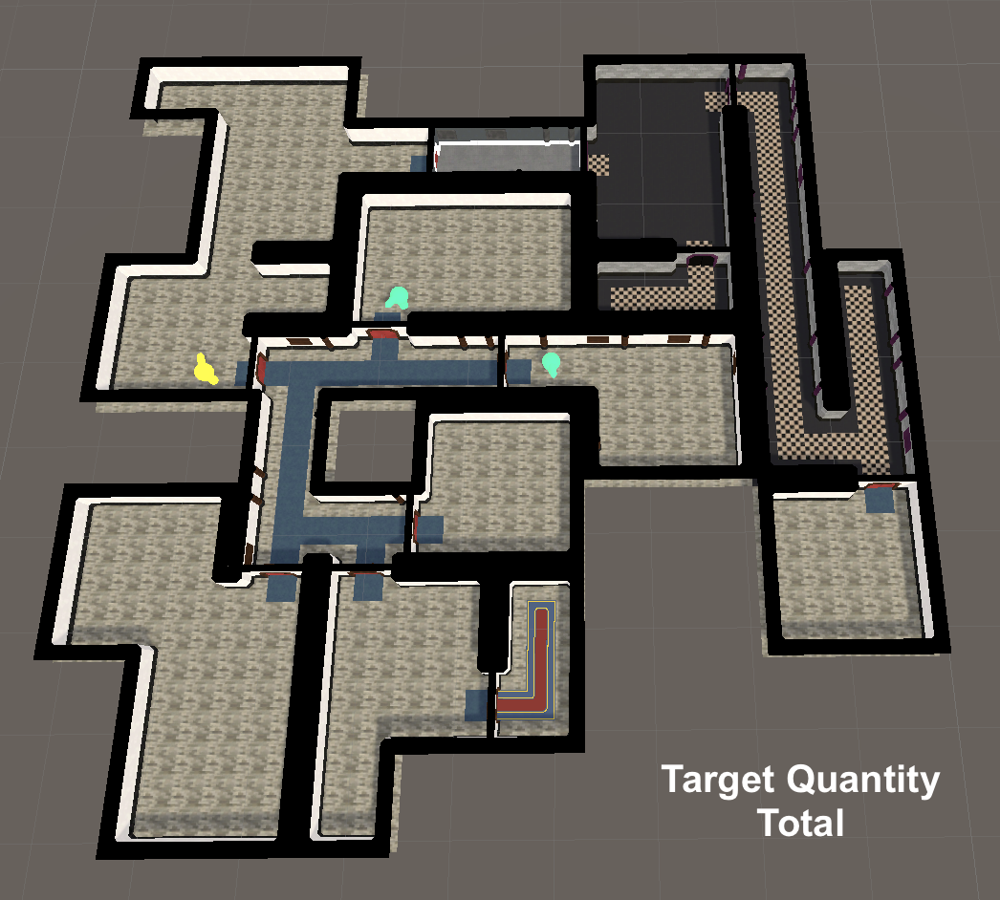

Map GameObject Placement
The MapGameObjectPlacement component is a MapGenPostProcess for placing prefab instances in your map. As an alternative to the normal Prop Placement system, this component allows you to place specific objects in specific quantities independent of AreaDefinitions or TileModuleDefinitions.

Setup
- Add
MapGameObjectPlacementto the same GameObject as yourMoraMapGencomponent. - Add one or more prefabs you want to place to the Prefabs list.
- Choose the Phase, Selection Policy, Placement Areas, and Placement Method, then configure the additional fields shown for those choices.
This component will run automatically whenever you generate a map, whether in editor or at runtime. The timing is determined by it's Phase selection.
Choose how many objects to target
Quantity is the requested count interpreted by the Selection Policy. It is a target, not a guarantee. A placement can fail due to collider overlap, or due to there simply not being enough available positions for it.
| Selection Policy | Description | Distribution Modes used |
|---|---|---|
TargetQuantityOfEach |
Try to place the requested quantity of each prefab in any of the eligible areas. | Area distribution |
TargetQuantityPerArea |
Try to place the requested quantity of prefabs in each eligible area. | Prefab distribution |
TargetQuantityTotal |
Try to place the requested total of prefabs in any of the eligible areas. | Prefab and Area distributions |
Note
Some combinations of settings result in the Quanity being forced to 0 because there can only ever be one valid spot per area with those settings.
Choose areas and candidate positions
Placement Areas specifies whether to place prefabs in Rooms, Corridors, or Both.
Placement Method specifies how to place prefabs in a given area.
- Random Grid Space: selects a random tile in the area and places a prefab at the center world position of that tile.
- Central Grid Space: places a prefab in the center of the tile that is closest to the middle of the area.
- Prop Spots places a prefab on one of the relevant Prop Spots in the area that matches the specified Prop Channel.
- Procedural Prop Spots: places a prefab on one of the relevant Procedural Prop Spots in the area that matches the relevant
Room Procedural Prop SpotsandCorridor Procedural Prop Spotsselections.
Rotation Settings is an optional Prop Rotation Settings asset for additional random rotation to be applied relative to the placement's base orientation.
Additional Parameters
Each Placement Method may expost other parameters:
Orientation Mode determines the base orientation for a prefab when placing it using the Random Grid Space and Central Grid Space Placement Methods.
- Constant lets you specify a Heading in degrees.
- Random picks a heading at random between 0-360 degrees.
- Random Cardinal Direction picks a random 90 degree increment heading. (Equivalent to North, East, South, or West.)
- Farthest Distance picks the cardinal direction that looks down the farthest traversable distance before hitting a wall. (Good for preventing a prefab from being placed facing a wall.)
Procedural Prop Spot Offsets is an optional Procedural Prop Spot Offsets asset for additional random positional offset to be applied relative to the spot's position. Note that this also applies when using Random Grid Space or Central Grid Space as well as the Procedural Prop Spots Placement Method.
Prop Spot Channel is required for determining which Prop Spots can be used. Any of your module prefabs in the map that have a Prop Spot with the same Prop Channel assigned will be a match.
Offset Multiplier multiplies the offset magnitude applied. A value of 1 is essentially unchanged. Anything smaller than 1 diminishes the offset magnitude.
Room Procedural Prop Spots specifies which Procedural Prop Spots to use when placing in Rooms.
- Center is the centroid of the largest unbroken rectangular space in the given area. Note it is not locked to the center of a grid space like
Central Grid Spaceis. - Corners are any concave corners inside the room.
- Door Spaces are any grid spaces that have a door connecting to another area.
Corridor Procedural Prop Spots specifies which Procedural Prop Spots to use when placing in Corridors.
- Straights are any tiles where the segment of corridor does not turn or have any intersections.
- Corners are any tiles where the corridor does a 90 degree ("L" shaped) turn without any intersections.
- Intersections are tiles with corridor connections on 3 or 4 sides, such as a "T" or "X" intersection.
Distribution Modes
Depending on your chosen Selection Policy, prefabs and areas may be selected at random. When that is the case, you can specify a distribution mode to use.
Uniform is like a single die roll; every option is just as likely as any other.

Normal is more like rolling 2 dice; a 7 is way more likely than a 12. Options in the middle are much more likely to be selected, while options toward the extremes are exponentially less likely. The Spread Factor lets you control how tight the bell curve is.

Biased and Biased Flipped is weighted heavily to one extreme. The Bias Strength lets you control how heavily biased it is.

Shuffle And Deal is like dealing cards. Distribution is as equal as possible. Some options might be selected at most 1 more time than the others.

Placement Overlap
When a prefab is placed, it is checked for any collider overlap with any objects that were already in the scene before it. If it overlaps by any amount more than the Overlap Tolerance, that placement is canceled and it will be attempted with a different available spot, if possible.
Demo and Examples
You can see this in action in the MapGameObjectPlacement Demo scene located in MoraGames/MoraMapGen/Demo/Scenes/Advanced Demo Scenes.
To visualize the difference between the Selection Policies, here are some examples using 2 different prefabs, a green and a yellow one, with Placement Areas set to "Both" and Quantity set to 3:
Target Quantity of Each
3 Green and 3 Yellow prefabs are placed:

Target Quantity Per Area
3 prefabs selected at random are placed in each Room area:

Target Quantity Total
Only 3 prefabs total, selected randomly, are placed in the entire map.
